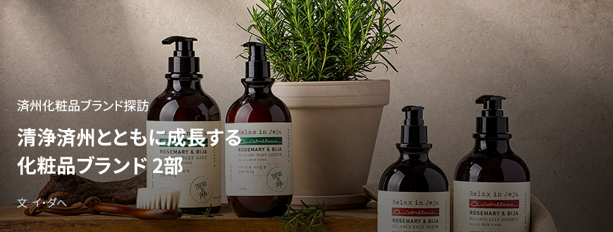
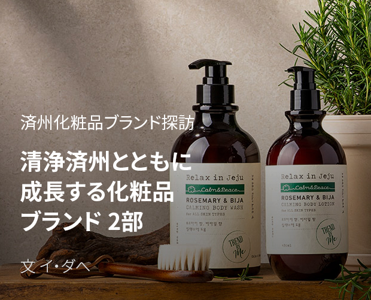
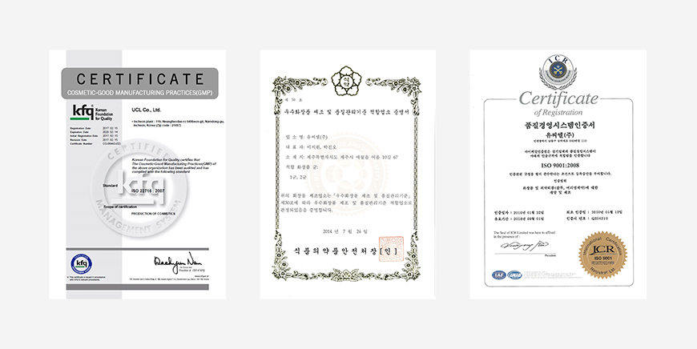
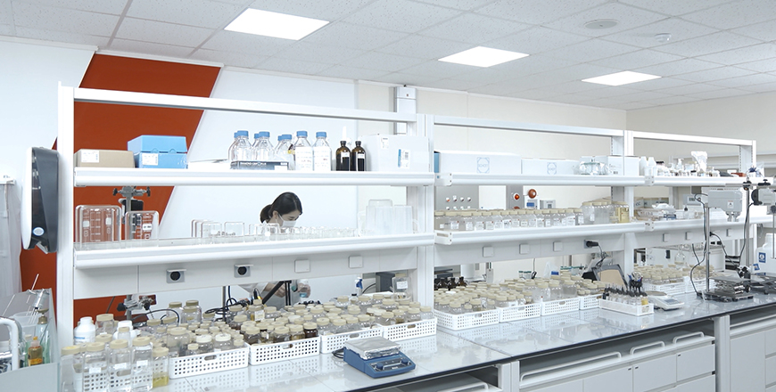

기획취재콘텐츠
- Home
- 제주라이프
- 기획취재콘텐츠
清浄済州とともに成長する化粧品ブランド 2部새로운 글




済州化粧品産業の基盤を築く。ユーシーエル
ユーシーエルは1980年、化粧品原料の専門企業としてスタートした韓国の代表的な化粧品OEM・ODM企業である。1995年仁川南東工業団地にCGMP(Cosmetics Good Manufacturing Practices、優秀化粧品製造及び品質管理基準、以下、CGMP)工場を竣工し、化粧品OEM・ODM業界の第1世代として事業を拡大した。
ユーシーエルは天恵の自然環境と多様な生物資源を備えた済州道が化粧品原料産業の最適地であると早くから判断し、それだけの価値が十分あると、2011年、済州テクノパーク中央研究所に済州分所を設立して済州に進出した。2013年には済州市涯月邑於音里に工場を建ててCGMP認証を獲得し、年間約3千万の製品を生産している。済州道内の民間の化粧品メーカーでCGMP認証を受けたのはユーシーエル済州工場が唯一である。
- ユーシーエル済州生産工場の全景 ⓒユーシーエル -

- ISO認証書(左)、CGMP済州認証書(中央)、品質経営システム認証書(右) ⓒユーシーエル -
ユーシーエル済州研究所は天然・オーガニック化粧品とビーガン化粧品など低刺激高機能自然主義製品の研究及び開発に特化した研究所で、済州エキナセア、緑茶、アロエ、スズタケ、馬油、ホンダワラ、カジメ、ワカメなど済州の植物と海洋生物資源を活用した天然化粧品原料を開発・生産している。済州玄武岩粉末組成物、エキナセアエキス、ツボクサエキス、椿オイル組成物など20以上の化粧品組成物の特許も持っている。
ユーシーエルは済州にしかない素材(Only in Jeju)や済州で育つことでより強い効果が得られる素材(Better in Jeju)を発掘して多様な化粧品の剤型に応用する研究を続けています。済州の素材に劣らぬ関心を得ているのが済州のストーリーです。化粧品のブランディングでは消費者の感性を刺激するストーリーテリングが重要です。「メイドイン済州」の化粧品が持つ済州の自然の個性的なストーリーを世界市場に発信し、その価値を広く知らせることが世界市場で生き残るために重要なことだと思います。
ユーシーエルは2007年に韓国で初めてM-ODM(Merchandising & ODM、以下、M-OD)方式を導入した。M-ODMは製品企画生産方式のODMにマーケティング面の支援を加えた新しい形の開発方式である。一つの製品が誕生するまで、ユーシーエルは化粧品の原料を見つけて製品開発はもちろん、固有のストーリーを探し出し、化粧品コンセプトの企画やマーケティングまで、ワンストップソリューションを提供する。M-ODM方式によるブランド開発は、高水準で平均化している化粧品技術市場において高度の技術力に顧客を動かす「ブランディング」を加えることで化粧品製造の付加価値を高めている。

- ユーシーエル化粧品研究所の内部 ⓒユーシーエル -
ユーシーエルで生産する済州化粧品認証制度(JCC：Jeju Cosmetic Cert)の認証を獲得した化粧品は2020年3月基準でおよそ150製品に上る。済州の穀物と椿オイル抽出物で開発したLG生活健康ビヨンド フィトモイスチャーライン、火山灰を活用したユニクミ発酵マスク、済州山房山炭酸温泉水と済州フレッシュコンプレックス(レモン、百年草、椿の花、菜の花蜂蜜)を含有したCJオリーブヤング・シンムルナラ(植物の国)済州炭酸水クレンジングラインなど有数の化粧品ブランドとのコラボを通じて済州産原料を開発し、これを含有した優秀な品質の化粧品を生産している。
- 済州ローズマリーとビジャの葉抽出物で作ったヘア及びボディー製品ブランド「リラックス・イン済州」 ⓒユーシーエル -
済州産の化粧品原料を利用した独自の化粧品ブランドラインも構築した。済州自然主義化粧品ブランド「アッコジェ」は、済州の黒大根、エキナセア、海藻など済州産原料の抽出物を使い、ホワイトニング、アンチエイジングなど7つの基礎及び機能性化粧品ラインを発売している。済州の豊かな生物資源を基にユニークなストーリーを製品に加えて済州を訪れた観光客や国内消費者はもちろん、ベトナムとタイなど海外からも手ごたえのある反応を得ている。また、済州のローズマリーとビジャの葉からエッセンシャルオイルを抽出して天然の香りを開発し、ヘア及びボディー製品ブランド「リラックス・イン済州」をローンチすることで、ホームスパトレンドに合わせてプレミアムホームスパブランドへと市場を拡大している。